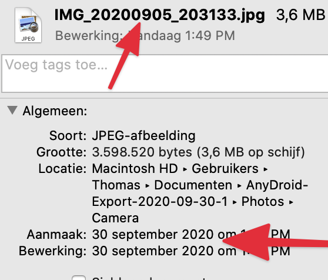

# general packages
library(tidyverse) # our swiss army knife
library(fs) # reading in files in a tidyish way
library(lubridate) # working with dates
# specialized packages
library(exifr) # for reading photo metadataOne gnarly problem I sometimes face is that when I transfer pictures from my phone to my computer, the metadata says that the date the picture was taken is actually the date the file was created on my computer. In other words, the date is wrong. This has bad consequences for photography software that reads the metadata and sorts them by date taken (like Flickr does for me).
The problem is illustrated here in this screenshot. We can infer from the name of the file that it was taken on the 5th of September, while the creation date in my computer is today (30th of September).

Luckily, with R it’s not hard to get the correct metadata. There are two possible routes. The first one concerns real pictures, which actually still have the correct metadata hidden within the file; the second one is for screenshots, which maybe have the wanted date in the filename, but which don’t have intrinsic metadata.
Ready, set, go.
Packages
Apart from the general rstudio-like packages like tidyverse, fs, glue and lubridate, we need a specialized package exifr (github) for reading EXIF metadata attached to pictures. exifr extracts these metadata and can output them in a nice dataframe. Specifically we are interested in the variable “DateTimeOriginal”.
Route 1: getting DateTimeOriginal and changing the creation date.
# reading in all the different pictures we need to treat in batch
files <- dir_ls("PATH TO FOLDER WHERE PICTURES ARE STORED",
recurse = TRUE,
regexp = ".jpg$")
# defining a function
change_file_create_date <- function(afb){
# get correct exif date
read_exif(path = afb,
tags = c("DateTimeOriginal")) %>%
pull(DateTimeOriginal) %>%
parse_date_time("Ymd HMS",
tz = "Asia/Taipei" #timezone
) -> correct_time
# changing the creation date
Sys.setFileTime(afb, correct_time)
}
# run the function over all the different files
purrr::walk(files, change_file_create_date)Route 2: pulling the date from filename and changing the creation date.
Screenshots on my computer, which is configured in Dutch, have the following filename.
Schermafbeelding 2020-09-30-09-38-32.png
So that means “SCREENSHOT DATE-TIME.png”. The date and time can be foudn with a fairly simple regular expression, namely:
'4 NUMBERS' FOLLOWED BY FIVE TIMES THE SEQUENCE '-2 NUMBERS'
In R code that is written like:
\\d{4}(-\\d\\d){5}
And then we’re set. Just adapt the function definition in the middle and run it over the files we want to change.
# read in files
files <- dir_ls("PATH TO FOLDER WHERE PICTURES ARE STORED",
recurse = TRUE,
regexp = ".jpg$")
# function definition
change_file_create_date <- function(afb){
# get correct date from filename
afb %>%
as.character() %>%
str_extract("\\d{4}(-\\d\\d){5}") %>%
parse_date_time("YmdHMS",
tz = "Asia/Taipei" #timezone
) -> correct_time
# changing the creation date
Sys.setFileTime(afb, correct_time)
}
# run the function over all the different files
walk(files, change_file_create_date)And there we have it, based on the correct regular expression, we can batch process these without much effort.

And should you be wondering, this is the picture we were trying to change, with the nice message from my friends in zhuyin: I❤️U ㄚㄓˋ.